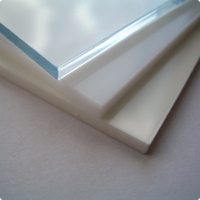
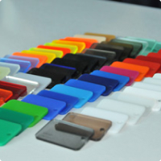
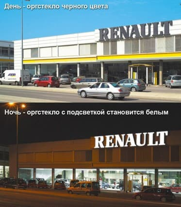
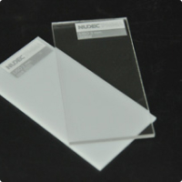
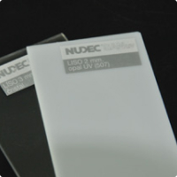

Листовые материалы
Акриловое оргстекло
- Акриловое стекло Plexiglas XT (Германия)
-

Акриловое стекло Plexiglas отличаются высокой светопроницаемостью бесцветного материала, свето- и погодоустойчивостью, устойчивостью к УФ излучению (данное акриловое стекло не становится хрупким даже после длительного воздействия окружающей среды), высоким сопротивлением излому и деформациям, что позволяет использовать плексиглас как снаружи, так и внутри помещения в течение длительного срока. Акриловое стекло эффективно для изготовления объемных элементов. Такие уникальные свойства Plexiglas XT, как его малая масса, высокий предел прочности, светопроницаемость, эластичность, способствуют осуществлению самых смелых технологических и архитектурных решений.
-
Основные СВОЙСТВА:
- Сплошные листы PLEXIGLAS® XT;
- Экструдированные акриловые листы;
- Непревзойденная стойкость к погодным условиям;
- Высокая прозрачность (20070: пропускание света 92%); Светорассеивание 28%
- Отличные качества поверхности;
- Легко обрабатываются;
- Стойкие к разрушению;
- Малые допуски по толщине;
- Имеются прозрачные, белые и цветные листы;
- Обычно горючие, B2 по DIN 4102.
-
Область применения:
- Дизайн: объемные формованные изделия; оформление выставок;
- Рекламные конструкции: световые табло, объемные световые буквы, вывески; трафаретная печать; увенирная продукция, номерки, бирки к ключам
- POS материалы: рекламные подставки, выставочные стенды т.п.;
- Строительство – остекление, козырьки, перегородки.
Технические характеристики:
https://www.plexiglas.de/sites/lists/pm/documentsap/211-1-plexiglas-gs-xt-en.pdfНаименование Размер мм. Plexiglas® XT White 05070 3050х2050х2 Plexiglas® XT White 05070 3050х2050х3 Plexiglas® XT White 05070 3050х2050х4 Plexiglas® XT Clear 20070 3050х2050х10 Plexiglas® XT Clear 20070 3050х2050х8 - Литьевое акриловое стекло (цветное) Perspex (Англия)
-

Акриловое стекло может быть как светопроницаемые, так и светорассеивающими. Акриловое стекло на сегодняшний день активно применяется в производстве изделий и конструкций для рекламы: сувениры, офисные вывески, объемные буквы с подсветкой, в строительстве и в медицине. Выделяют два основных вида оргстекла: литое оргстекло и экструдированное оргстекло. Оба вида оргстекла обладают широким спектром применения, имея уникальные технические характеристики.
Литое оргстекло обладает повышенной ударопрочностью, легко поддается обработке. Толщина листов – от 2 до 200 мм.
Цветовая гамма литого оргтекла намного шире, чем у экструдированного оргстекла. Основное отличие литого и экструдированного акрила – их молекулярная структура.
У литого – молекулярная масса составляет до 3000000, у экструдированного - 150000. Отличается длина молекул, поэтому литой акрил более стоек к растрескиванию, более вязок, легче поддается лазерной резке и гравировке. Литьевой акрил более термостойкий, более ударопрочный, производится практически в неограниченном диапазоне толщин, лучше полируется и надежнее при формовке (меньше реагирует на неравномерность прогрева, меньше усадка, меньшее влияние концентраторов напряжений). Литьевой акрил имеет лучшую химическую стойкость к агрессивным средам и растворителям.
Наименование Размер мм. LUCITE Perspex color 3050x2030x3 Paraglas color 3050x2030x3 BARLO CAST color 3050x2030x3 - Литьевое акриловое стекло (чёрно-белый) Perspex (Англия)
-

"Черно-белое" акриловое оргстекло - окрашенное в черный цвет оргстекло в действительности полупрозрачное и светорассеивающее. Поэтому оно выглядит черным при дневном свете и прозрачным при искусственном освещении в темное время суток. Это значит, что изображение может появляться или не появляться в зависимости от того, подсвечено оно или нет. Материал предназначен для изготовления рекламных вывесок и светящихся кессонов, обеспечивая временную световую сигнализацию: надписи или знаки, скрытые пластиковой перегородкой кессона, становятся видимыми при их освещении. Это, в частности, идеальное решение при создании предупреждающих указателей, светофоров, витрин магазинов.
Наименование Размер мм. Perspex blacksatin 9T25 3050x2030x3 - Акриловое стекло PMMA “ХТ” Nudec (Испания)
-
PMMA “ХТ” (Полиметилметакрилат) экструдированное акриловое стекло или просто “оргстекло” в прозрачном и молочном исполнении. Материал характеризуется длительной устойчивостью к атмосферным воздействиям, хорошей ударопрочностью, легким весом, высокой светопроницаемостью до 93% для прозрачного стекла и хорошим показателем рассеивания для молочного . Материал устойчив к УФ излучению. Оргстекло легко поддается обработке и может подвергаться склеиванию, пилению, сверлению, термоформированию.
- Применение
- рассеиватели светильников
- «светящиеся» подвесные потолки
- подиумы, полы с внутренней подсветкой
- торговые и рекламные световые вывески (лайт-боксы) с нанесением аппликации из самоклеящихся пленок
- световые короба, пилоны
- указатели общественных учреждений, автостоянок, больниц и т.д.
- объемные буквы, макеты рекламируемой продукции с внутренней подсветкой
- цифровая печать
- медицинская техника, приборы
- остекление зданий и сооружений (наружное и внутреннее), витрины
- приборы и механизмы
- остекление транспорта
- перегородки, ограждающие конструкции
- фонари, купола, навесы
- элементы мебели, столешницы, полки
- торговое и выставочное оборудование
- подставки, держатели, информационных стенды
- демонстрационные конструкции, модели
- изделия наружной и интерьерной рекламы, торговых мест
- сувенирная продукция, номерки, бирки
- различные термоформованные изделия
- защитное остекление фотографий, картин, стендов
- аквариумы, детали интерьера, прозрачные полы, ступени лестниц и т.д.
- оформление выставок, шоу, концертов, телестудий
С акрилом (оргстекло, PMMA) мы сталкиваемся практически ежедневно и повсеместно, однако в подавляющем большинстве случаев речь идет об изделиях рекламно-торгового назначения: дисплеев, прилавков, вывесок и т.д., изготовленных из листового PMMA.
- Свойства:
- пропускает ультрафиолетовые и рентгеновские лучи, отражая инфракрасные;
- устойчив к влаге, микроорганизмам и ультрафиолету (последний не вызывает «старения» и пожелтения полимера);
- морозостоек (до -60°С);
- теплостоек (при +105°С размягчается);
- отличается высокими электроизоляционными характеристиками (но имеет полярность и не используется при высоких частотах);
- устойчив к маслам, кислотам и щелочам;
- горюч (во время горения не выделяет ядовитых соединений);
- экологически чист.
-
Преимущества материала: PMMA-пластик заметно выигрывает у силикатов по эксплуатационным характеристикам. Его отличают:
- Высокая прозрачность. Светопропускаемость PMMA – 92-93%, но она не снижается при увеличении толщины пласта.
- Легкость (1190 кг/м³). Полиметилметакрилат в 2-2,5 раза легче стекла. Из него можно создавать большие конструкции без использования дополнительных опор.
- Ударопрочность (в 5 раз выше, чем у силикатов). При разбивании не образуются опасные острые осколки.
- Легкость обработки. ПММА режется, сверлится, фрезеруется, шлифуется, склеивается и сваривается, расплавленный полимер штампуется, выдувается и экструдируется, размягченные листы и детали отлично поддаются термоформованию.
-
Применение полиметилметакрилата: Акриловое стекло используется в очень разных сферах:
- в архитектуре, авиа- и машиностроении – для создания аквариумов, остеклений, теплиц и оранжерей, перегородок, куполов, навесов, арок, прозрачных полов, лестниц и пр.;
- в торговле и рекламе – для изготовления торговых и выставочных конструкций, разнообразных подставок, вывесок, стендов, сувениров, а также для оформления концертных площадок, телестудий и т.д.;
- в светотехнике – для конструирования светильников, лайтбоксов, фонарей и фар;
- в медицине – для производства очков, контактных линз, систем переливания крови, стоматологических материалов;
- в оптоэлектронике – для создания оптоволокна и оптических дисков.
Наименование Размер мм. Nudec PMMA clear (прозрачный) 3050х2050х3 Nudec PMMA opal (белый) 3050х2050х3 - Акриловое оргстекло Nudec SAN (Испания)
-

САН-пластик (сополимер стирола и акрилонитрила) представляет собой листовой пластик различных толщин, который с успехом применяется при изготовлении рекламных конструкций и производстве торгового оборудования, а также как материалы для наружной рекламы. САН является отличной альтернативой акрилу для выполнения рекламных объектов. При сохранении лёгкости обработки, присущей акрилу, САН обеспечивает изделию более длительный срок службы конструкции за счёт высокой ударопрочности и жёсткости без потери оптических характеристик.
-
Свойства:
- повышенная стойкость к истиранию
- теплостойкость
- высокая стойкость к УФ
- устойчивость к накоплению статического заряда
- светопропускание до 87%
-
Применение:
- Прозрачные детали бытовой техники (кухонных комбайнов и др.),
- для ванной комнаты;
- рассеиватели фонарей,
- наружная и световая реклама;
- посуда; флаконы, футляры;
- корпуса аккумуляторов,
- кюветы,
- медицинские инструменты.
Наименование Размер мм. Nudec SAN clear (прозрачный) 1500х2050х1,5 Nudec SAN clear (прозрачный) 3050х1870х1,5 Nudec SAN clear (прозрачный) 3050х2050х3 Nudec SAN clear (прозрачный) 3050х2050х5 Nudec SAN opal (белый) 3050х2050х3 Nudec SAN opal (белый) 3050х2050х4 Barlo Spectar clear (прозрачное) 1250х2050х1